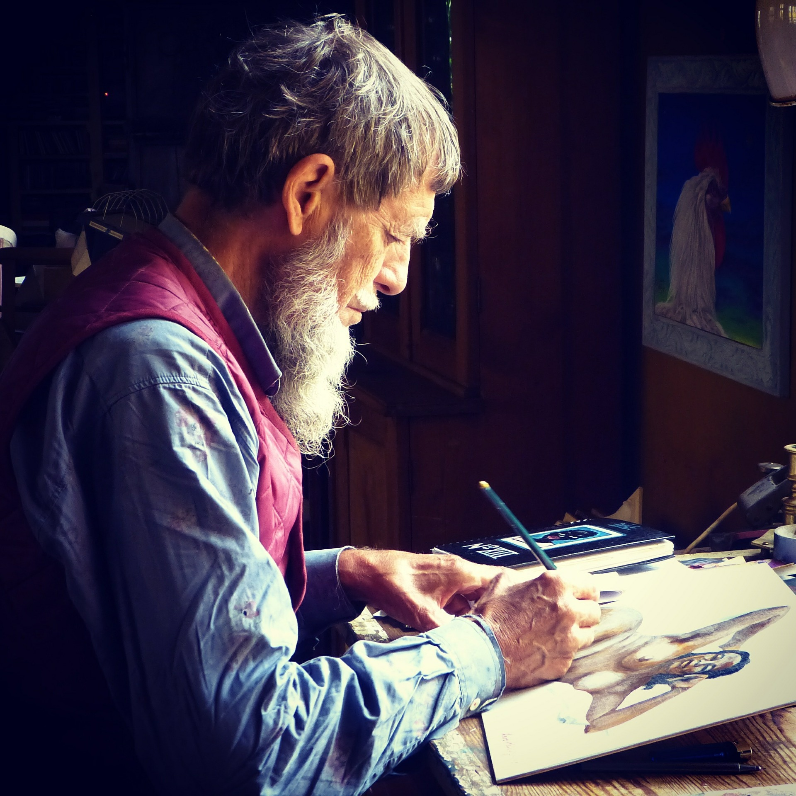

I present to you my art portfolio
I create unique artistic pieces you can use to decorate your personal or professaional space. My decorative pieces focus on vintage and temporary themes.
Using paintings, I create fine art that focuses on presenting both the beauty of the world as we see it, and beauty as conceived by the mind.
Capitalizing on the power of the eye and mind, I draw paintings that bring you closer to nature, events, imaginations, and emotions, and the world.
I am a self-taught Kenyan painter and artist with over 5 years of experience in creative work. I have created paintings for both personal and commercial decorations. Below, you will find some of my best works, and projects that I really enjoyed working on.
Check Out My Work